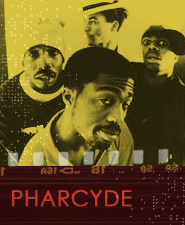

The Pharcyde is a very innovative, jazz/hip-hop fusion group based in South Central Los Angeles that formed in the late 1980s. The Pharcyde is Romye 'Booty Brown' Robinson, Tre 'Slimkid' Hardson, Imani Wilcox, and Derrick 'Fatlip' Stewart—all either former DJs or professional dancers. As a group, they were greatly influenced by jazz saxophonist John Coltrane.
Rolling Stone wrote of The Pharcyde that their "warped circus of sound—irresistibly juvenile rhymes, jazz-tinged party grooves, jarring samples and tons of incidental
chatter—changed the face of hip-hop." Slimkid Hardson says that "we call ourselves the Pharcyde cause it's a name that doesn't set any boundaries. Like if we were the Black Power Recipients, we couldn't do anything but political stuff. But our name can mean any f*cking thing, and I always want it to be that way. We're nuts when it comes to music. We dig the crazy sh*t." The Pharcyde toured on the second stage of the 1994 Lollapalooza and upstaged even the most outside of the main stage acts (Ali 1995, 38) .
The Pharcyde signed with Delicious Vinyl in 1991 and recorded Bizarre Ride II The Pharcyde (1992), which soon went gold (sold over 500,000 units). DJ Shadow said that "the last excellent Hip Hop Album that came out was the first Pharcyde record in 1992. There have been good ones since, but that's pretty much the last record that brought something new" (Shadow [n.d.]).
In Bizarre Ride II The Pharcyde, the group plays with, parodies, and criticizes popular culture images of African Americans. The CD cover features a Bill Cosby & Fat Albert-style cartoon of the group shooting down a roller coaster.
